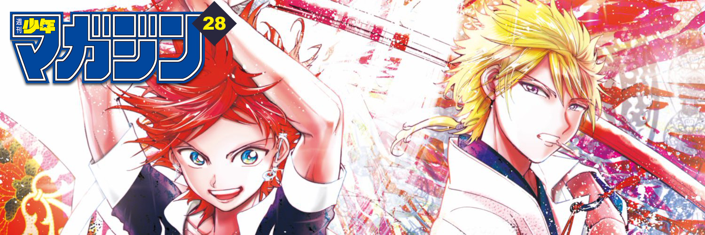
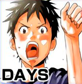
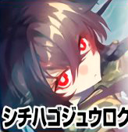

This week's Weekly Shonen Magazine posting order & comments from the author.

Question of the week
" "
Days

Recently I'm addicted to corn tea. It smells good!
Kanojo, Okarishimasu
Im going to comment (answer?) my followers, so I'll remix interesting comments 10 weeks later'. This TL is actually strange, I dont exactly know if he means he's gonna review follower comments in 10 weeks or something.
Tokyo Revengers
Tokyo Revengers CM is cool! The Voice Actor is great!
Domestic Girldriend
When you look at the works of the Newcomers Award, '1 page 1 page' becomes more energetic and motivated' (dont know what that 1page1page thing is about, probably mistranslation? idk)
The Seven Deadly Sins
A movie I watched recently has sunk down. Well, that happens too!' (I dont know if this is correct honestly, cant handle that much english expressions xD)
Bakemonogatari
I have had a toothache for 5 years! I need a dentist, it's gonna be a long treatment
Diamond no Ace act II

I just finished watching Game of Thrones. Let's read the books now
Blue Lock

The Game 'World War Z' is interesting. You play as a guy who kills a lot of zombies
Soredemo Ayumu wa Yosetekuru
It's too hot recently
Go-Toubun no Hanayome

We will be releasing the 10th volume soon! I didn't think I could reach two digits
Runway de Waratte
I recently started to watch Youtubers
Edens Zero

Congratulations to everyone who received the Kodansha Manga Award!
Borading School Juliet

Teppanyaki is fun~!
Fire Force

I'm going to stop talking about the contents of my manga before they get serialized, even to people I know. I don't know where my work could be stolen from.
Senryuu Girl
I bough an alarm clock that wakes you up using vibrations
Shinanaide Azukawa-san

I bought a souvenir from the Poo Museum
Danshi Kokosei wo Yashinaitai

Fish is delicious
Gamblers Parade

Salmon orchids will heal roughed hearts in serious battles
Hitman

I'm looking forward to the Olympics!
Seitokai Yakuindomo
I cut my hair
Shichiha Gojuroku

The first Hollywood movie I have seen in my life in theaters is 'Detective Pikachu' ,It was funny.
Mako-san wa Shindemo Jiritsu Shinai
Dancing Daisakusen', (series, film, idk?) which I have seen for a long time, is very interesting
Orient
Shinobu Ohtaka
I bought a parasol!